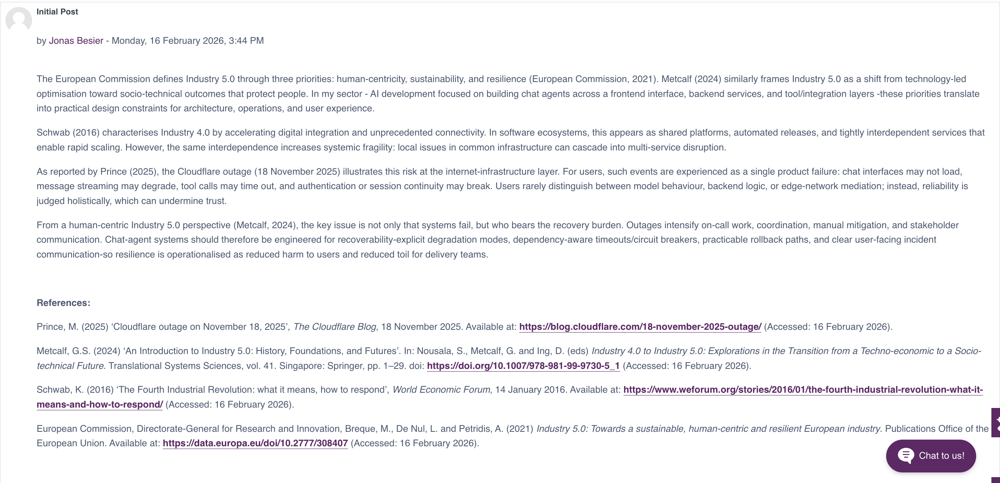
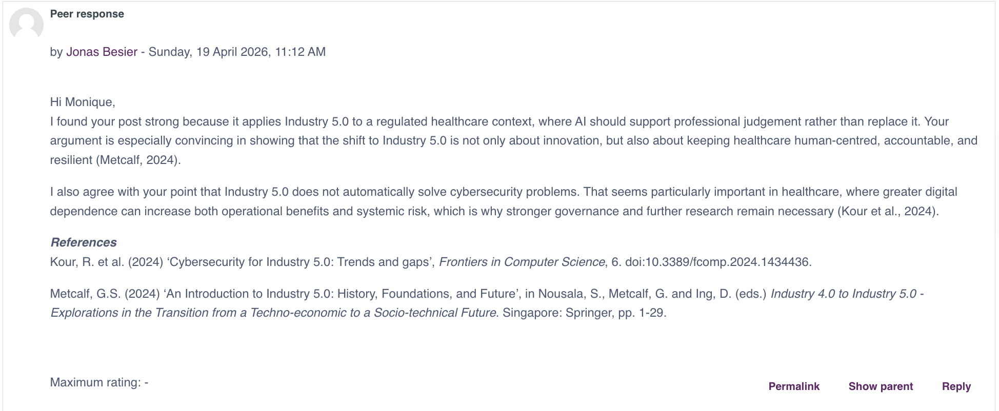
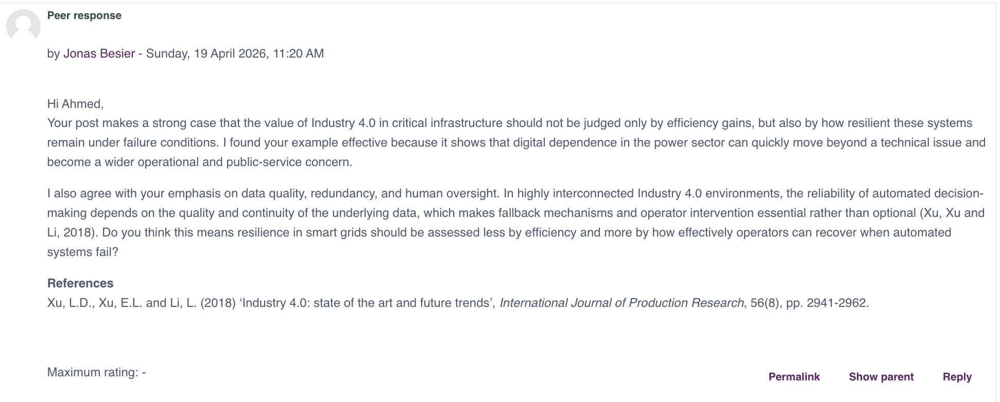
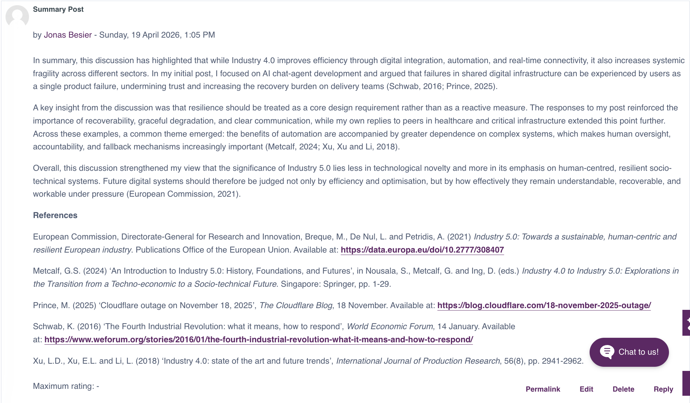

Collaborative Discussion 1: The 4th Industrial Revolution
Units 1-3
Entry Type Collaborative discussion summary
Done
Context
This collaborative discussion considered the Fourth Industrial Revolution through
AI development and chat-agent systems.
I used Industry 5.0 to frame responsible design around resilience, trust, and
human-centred systems.
Summary of My Initial Post
Monday, 16 February 2026, 3:44 PM
I argued that connected AI systems scale quickly but can become fragile. Using
Industry 5.0, I positioned resilience, recoverability, and clear incident
communication as design requirements, not afterthoughts.
European Commission, Directorate-General for Research and Innovation, Breque,
M., De Nul, L. and Petridis, A. (2021) Industry 5.0: Towards a sustainable,
human-centric and resilient European industry. Luxembourg: Publications
Office of the European Union.
Metcalf, G.S. (2024) ‘An introduction to Industry 5.0: history, foundations,
and futures’, in Nousala, S., Metcalf, G. and Ing, D. (eds)
Industry 4.0 to Industry 5.0. Singapore: Springer.
Summary of Responses Received
Kapinga Dimbu
Thursday, 19 February 2026, 7:45 AM
Kapinga reinforced resilience as a practical design requirement.
Mosleh Al Nakib
Sunday, 22 February 2026, 4:08 PM
Mosleh highlighted that users judge reliability at service level, not by
technical layers.
Summary of My Peer Responses
Monique Mizzi
Sunday, 19 April 2026, 11:12 AM
I agreed that healthcare AI should support, not replace, professional judgement.
Ahmed Ayman Abdelrahman
Sunday, 19 April 2026, 11:20 AM
I agreed that critical infrastructure should be judged by resilience as well as
efficiency.
What I Took from the Discussion
The discussion reinforced that resilience is both a technical and trust issue in
interconnected digital systems.
Evidence Screenshots

Initial post

Peer response to Monique Mizzi

Peer response to Ahmed Ayman Abdelrahman

Summary post
Learning Outcomes
Supports
LO2,
and
LO4
through applied discussion and peer engagement.